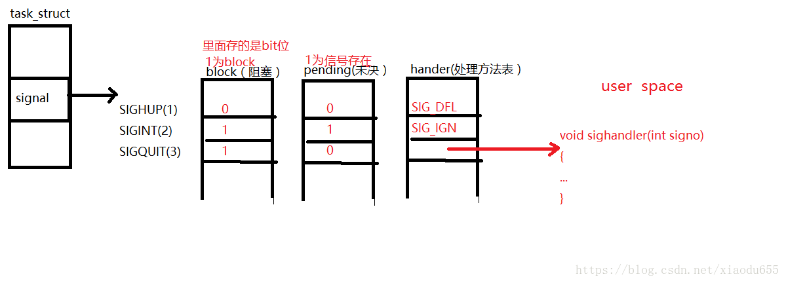
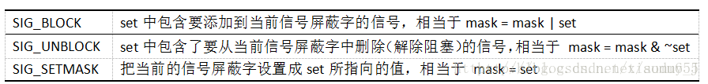
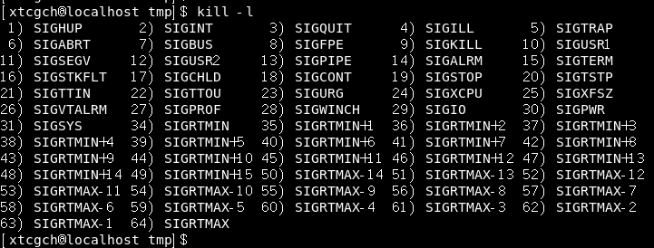

<!DOCTYPE HTML>
<html lang="zh-CN">
<head><meta name="generator" content="Hexo 3.8.0">
    <!--Setting-->
    <meta charset="UTF-8">
    <meta name="viewport" content="width=device-width, user-scalable=no, initial-scale=1.0, maximum-scale=1.0, minimum-scale=1.0">
    <meta http-equiv="X-UA-Compatible" content="IE=Edge,chrome=1">
    <meta http-equiv="Cache-Control" content="no-siteapp">
    <meta http-equiv="Cache-Control" content="no-transform">
    <meta name="renderer" content="webkit|ie-comp|ie-stand">
    <meta name="apple-mobile-web-app-capable" content="我的博客 - blog">
    <meta name="apple-mobile-web-app-status-bar-style" content="black">
    <meta name="format-detection" content="telephone=no,email=no,adress=no">
    <meta name="browsermode" content="application">
    <meta name="screen-orientation" content="portrait">
    <link rel="dns-prefetch" href="https://lives.xtcgch.ink">
    <!--SEO-->

<meta name="description" content="脑容量不够，笔记来凑">


<meta name="robots" content="all">
<meta name="google" content="all">
<meta name="googlebot" content="all">
<meta name="verify" content="all">
    <!--Title-->


<title>IPC之信号篇 | 我的博客 - blog</title>


    <link rel="alternate" href="/atom.xml" title="我的博客 - blog" type="application/atom+xml">


    <link rel="icon" href="https://blog.xtcgch.ink/img/background/海绵宝宝.ico">

    


<link rel="stylesheet" href="/css/bootstrap.min.css?rev=3.3.7">
<link rel="stylesheet" href="/css/font-awesome.min.css?rev=4.5.0">
<link rel="stylesheet" href="/css/style.css?rev=@@hash">


    


    

</head>

</html>
<!--[if lte IE 8]>
<style>
    html{ font-size: 1em }
</style>
<![endif]-->
<!--[if lte IE 9]>
<div style="ie">你使用的浏览器版本过低，为了你更好的阅读体验，请更新浏览器的版本或者使用其他现代浏览器，比如Chrome、Firefox、Safari等。</div>
<![endif]-->

<body>
    <header class="main-header" style="background-image:url(https://blog.xtcgch.ink/img/head-bg.jpg)">
    <div class="main-header-box">
        <a class="header-avatar" href="/" title="unistd68">
            
        </a>
        <div class="branding">
        	<!--<h2 class="text-hide">Snippet主题,从未如此简单有趣</h2>-->
            
                <h2> 脑容量不够，笔记来凑 </h2>
            
    	</div>
    </div>
</header>
    <nav class="main-navigation">
    <div class="container">
        <div class="row">
            <div class="col-sm-12">
                <div class="navbar-header"><span class="nav-toggle-button collapsed pull-right" data-toggle="collapse" data-target="#main-menu" id="mnav">
                    <span class="sr-only"></span>
                        <i class="fa fa-bars"></i>
                    </span>
                    <a class="navbar-brand" href="https://lives.xtcgch.ink">我的博客 - blog</a>
                </div>
                <div class="collapse navbar-collapse" id="main-menu">
                    <ul class="menu">
                        
                            <li role="presentation" class="text-center">
                                <a href="https://blog.xtcgch.ink/"><i class="fa "></i>主页</a>
                            </li>
                        
                            <li role="presentation" class="text-center">
                                <a href="https://blog.xtcgch.ink/categories/原理/"><i class="fa "></i>原理</a>
                            </li>
                        
                            <li role="presentation" class="text-center">
                                <a href="https://blog.xtcgch.ink/categories/实战/"><i class="fa "></i>实战</a>
                            </li>
                        
                            <li role="presentation" class="text-center">
                                <a href="https://blog.xtcgch.ink/categories/开源/"><i class="fa "></i>开源</a>
                            </li>
                        
                            <li role="presentation" class="text-center">
                                <a href="https://blog.xtcgch.ink/categories/求职/"><i class="fa "></i>求职</a>
                            </li>
                        
                            <li role="presentation" class="text-center">
                                <a href="https://blog.xtcgch.ink/categories/其他/"><i class="fa "></i>其他</a>
                            </li>
                        
                            <li role="presentation" class="text-center">
                                <a href="https://blog.xtcgch.ink/archives/"><i class="fa "></i>时间轴</a>
                            </li>
                        
                    </ul>
                </div>
            </div>
        </div>
    </div>
</nav>
    <section class="content-wrap">
        <div class="container">
            <div class="row">
                <main class="col-md-8 main-content m-post">
                    <p id="process"></p>
<article class="post">
    <div class="post-head">
        <h1 id="IPC之信号篇">
            
	            IPC之信号篇
            
        </h1>
        <div class="post-meta">
    
    
    <span class="categories-meta fa-wrap">
        <i class="fa fa-folder-open-o"></i>
        <a href="https://blog.xtcgch.ink/categories/原理">
            原理
        </a>
    </span>
    

    
    <span class="fa-wrap">
        <i class="fa fa-tags"></i>
        <span class="tags-meta">
            
                
                    <a href="https://blog.xtcgch.ink/tags/LINUX" title="LINUX">
                        LINUX
                    </a>
                
                    <a href="https://blog.xtcgch.ink/tags/信号" title="信号">
                        信号
                    </a>
                
                    <a href="https://blog.xtcgch.ink/tags/IPC" title="IPC">
                        IPC
                    </a>
                
            
        </span>
    </span>
    

    
        
        <span class="fa-wrap">
            <i class="fa fa-clock-o"></i>
            <span class="date-meta">2019/02/15</span>
        </span>
        
    
</div>

            
            
            <p class="fa fa-exclamation-triangle warning">
                本文于<strong>1012</strong>天之前发表，文中内容可能已经过时。
            </p>
        
    </div>
    
    <div class="post-body post-content">
        <p><strong>摘要：</strong>简单的介绍常用信号，信号的三种状态、信号的处理方式和信号集。</p>
<a id="more"></a>
<hr>
<h2 id="Linux常用信号"><a href="#Linux常用信号" class="headerlink" title="Linux常用信号"></a><table><tr><td bgcolor="#C7C7C7">Linux常用信号</td></tr></table></h2><p>在linux下有很多信号，按可靠性分为可靠信号和非可靠信号，按时间分为实时信号和非实时信号，linux进程也有三种方式来处理收到的信号：</p>
<ul>
<li>忽略信号，即对信号不做任何处理，其中，有两个信号不能忽略：SIGKILL及SIGSTOP；</li>
<li>捕捉信号。定义信号处理函数，当信号发生时，执行相应的处理函数；</li>
<li>执行缺省操作，Linux对每种信号都规定了默认操作。</li>
</ul>
<p>Linux进程对实时信号的缺省反应是进程终止。但是对于高性能服务器编程来说，这是致命的缺陷，对于这类服务器需要保证在收到各种信号后仍然可以可靠运行，所以我们需要在理解各种信号的缘由和正确的处理方式。本文将笔者经常碰到的一些信号进行整理，结合自己的使用经验简要分析。</p>
<font color="#0000FF">SIGHUP</font>

<p>  和控制台操作有关，当控制台被关闭时系统会向拥有控制台sessionID的所有进程发送HUP信号，默认HUP信号的action是 exit，如果远程登陆启动某个服务进程并在程序运行时关闭连接的话会导致服务进程退出，所以一般服务进程都会用nohup工具启动(该命令就是让忽略该信号)或写成一个 daemon(利用setsid进行)。</p>
<hr>
<p>以下五组可以放在一块类比</p>
<ol>
<li><font color="#0000FF">SIGINT</font> 

</li>
</ol>
<p>终止进程，通常我们的Ctrl+C就发送的这个消息。</p>
<ol start="2">
<li><font color="#0000FF">SIGQUIT</font> 

</li>
</ol>
<p>和SIGINT类似, 但由QUIT字符(通常是Ctrl- / )来控制. 进程收到该消息退出时会产生core文件。</p>
<ol start="3">
<li><font color="#0000FF">SIGKILL</font> 

</li>
</ol>
<p>消息编号为9，我们经常用kill -9来杀死进程发送的就是这个消息，程序收到这个消息立即终止，这个消息不能被捕获，封锁或这忽略，所以是杀死进程的终极武器。</p>
<ol start="4">
<li><font color="#0000FF">SIGTERM</font> 

</li>
</ol>
<p>是不带参数时kill默认发送的信号，默认是杀死进程。</p>
<ol start="5">
<li><font color="#0000FF">SIGSTOP</font> 停止进程的执行，同SIGKILL一样不可以被应用程序所处理，注意它和terminate以及interrupt的区别:该进程还未结束, 只是暂停执行。</li>
</ol>
<hr>
<ol>
<li><font color="#0000FF">SIGCONT</font> 

</li>
</ol>
<p>当SIGSTOP发送到一个进程时，通常的行为是暂停该进程的当前状态。如果发送SIGCONT信号，该进程将仅恢复执行。除了其他目的，SIGSTOP和SIGCONT用于Unix shell中的作业控制，无法捕获或忽略SIGCONT信号。</p>
<ol start="2">
<li><font color="#0000FF">SIGPIPE</font> 

</li>
</ol>
<p>这个是向一个没有读进程的管道写数据产生的错误，这种解释过于官方。在网络编程中这个信号发生在如果客户端已经关闭了套接字, 而服务器调用了一次write，服务器就会收到一个RST segment，如果服务器再次调用write，这个时候就会产生SIGPIPE信号，系统默认的处理方式是关掉这个进程， 但是对于一个高可用的服务器程序来说，需要手动处理这个信号，所以你会看到许多服务器程序代码会在前面显式加上signal (SIGPIPE, SIG_IGN)来忽略这个信号。     </p>
<ol start="3">
<li><font color="#0000FF">SIGCHILD</font> 

</li>
</ol>
<p>这个同样是高性能服务器需要关注的信号，如果服务器采用fork产生的子进程推出后要调用wait进行资源回收，防止僵尸进程的产生，但是如果程序对子进程退出后的状态不感兴趣的话可以调用signal(SIGCHLD,SIG_IGN); 交给系统init去回收。子进程也不会产生僵尸进程了。</p>
<ol start="4">
<li><font color="#0000FF">SIGSEGV</font> 

</li>
</ol>
<p>就是SegmentFault 试图访问未分配给自己的内存, 或试图往没有写权限的内存地址写数据，官方举得三个例子是：</p>
<p>buffer overflow — usually caused by a pointer reference out of range.  野指针<br>stack overflow — please keep in mind that the default stack size is 8192K.  栈溢出<br>illegal file access — file operations are forbidden on our judge system. 非法文件访问<br>SIGBUS 指针所对应的地址是有效地址，但总线不能正常使用该指针。通常是未对齐的数据访问所致。试图访问一块无文件内容对应的内存区域，比如超过文件尾的内存区域，或者以前有文件内容对应，现在为另一进程截断过的内存区域。</p>
<ol start="5">
<li><font color="#0000FF">SIGURG</font> 

</li>
</ol>
<p>I/O紧急信号，也就是tcp传输带外数据时使用，但是tcp手册 RFC6093中已经不建议使用紧急指针了，所以这个信号也就没什么用了。</p>
<ol start="6">
<li><font color="#0000FF">SIGIO</font> 

</li>
</ol>
<p>当描述符上可以进行I/O时产生这个信号，这时五大IO模型中信号驱动IO模型的实现信号。</p>
<ol start="7">
<li><font color="#0000FF">SIGALRM</font> 

</li>
</ol>
<p>时钟定时信号, 计算的是实际的时间或时钟时间.alarm函数使用该信号.</p>
<hr>
<h2 id="信号的三种状态"><a href="#信号的三种状态" class="headerlink" title="信号的三种状态"></a><table><tr><td bgcolor="#C7C7C7">信号的三种状态</td></tr></table></h2><ul>
<li>信号递达：实际执行信号的处理动作。</li>
<li>信号未决：信号从产生到递达之间的状态。</li>
<li>进程可以选择阻塞（block）某个信号。一旦该信号被阻塞就不会被抵达，只有解除阻塞才可被递达。<ul>
<li>被阻塞的信号产生时将保持在未决状态，直到进程解除对此信号的阻塞，才执行递达的动作。</li>
<li>阻塞与忽略是不同的，只要信号阻塞就不会被递达，忽略是在递达之后可选的一种处理动作。</li>
</ul>
</li>
</ul>
<hr>
<h2 id="信号的三种处理方式"><a href="#信号的三种处理方式" class="headerlink" title="信号的三种处理方式"></a><table><tr><td bgcolor="#C7C7C7">信号的三种处理方式</td></tr></table></h2><ul>
<li>忽略此信号。</li>
<li>执⾏行该信号的默认处理动作（终止该信号）。</li>
<li>提供⼀个信号处理函数（自定义动作）,要求内核在处理该信号时切换到用户态执行这个处理函数,这种方式称为捕捉(Catch)一个信号。 </li>
</ul>
<p>这三种处理方式的信号状态都为<font color="#0000FF">信号递达</font>。</p>
<hr>
<h2 id="信号在内核中的表示（三张表）"><a href="#信号在内核中的表示（三张表）" class="headerlink" title="信号在内核中的表示（三张表）"></a><table><tr><td bgcolor="#C7C7C7">信号在内核中的表示（三张表）</td></tr></table></h2><p>这3张表分别对应3种状态：</p>
<ul>
<li>信号阻塞（block） </li>
<li>信号未决（pending） </li>
<li>信号递达—自定义捕捉函数（handler）</li>
</ul>
<p></p>
<p>其中，前两张表都是位图（BitSet）来存储的。block表中信号被阻塞就将相应位置1，否则置0。而pending表中，若置1则表示信号存在，0则相反。即可这样说。<font color="#0000FF">pending表中的数据是判断信号是否存在的唯一依据</font>。</p>
<p>结合上图就可以知道：</p>
<ul>
<li>SIGHUP信号未阻塞也未产生过，但当它递达时就会执行默认处理动作。</li>
<li>SIGINT信号产生过，但已被阻塞。所以暂时不能递达。虽然它的处理动作是忽略。但在没有解除阻塞之前不能忽略这个信号，因为进程仍有机会改变处理动作之后再解除阻塞。</li>
<li>SIGQUIT信号未产生过，一旦产⽣将被阻塞，它的处理动作是用户自定义的捕捉函数handler。</li>
</ul>
<p>那么可以将信号的三张表总结成这样：</p>
<ul>
<li>如果一个信号被block，若收到信号，则该信号必定被Pending。</li>
<li>一个进程收到信号时不会立即递达，在此过程中一直被Pending。</li>
</ul>
<p>一个标准：如果在进程解除对信号的阻塞之前，该信号产生过多次，将如何处理呢？ </p>
<p>答：POSIX.1允许系统递送该信号一次或多次。</p>
<p>Linux是这样规定的：常规信号在递达之前产生多次只记一次，而实时信号在递达之前产生多从可以依次放在一个队列中。</p>
<hr>
<h2 id="信号集"><a href="#信号集" class="headerlink" title="信号集"></a><table><tr><td bgcolor="#C7C7C7">信号集</td></tr></table></h2><h3 id="概念"><a href="#概念" class="headerlink" title="概念"></a><font color="#0000FF">概念</font></h3><p>信号集是一个包含了所有信号的集合。信号的发送与接收都是以信号集为单位进行发送。</p>
<h3 id="信号集Sigset-t结构"><a href="#信号集Sigset-t结构" class="headerlink" title="信号集Sigset_t结构"></a><font color="#0000FF">信号集Sigset_t结构</font></h3><p>在上图中，未决和阻塞标志都可以用相同的数据结构（位图）存储。所以当然可以用同一数据类型来表示，这就是sigset_t. </p>
<p>sigset_t称为信号集，这个类型可以表示每个信号的“有效”或“无效”状态。</p>
<p>在阻塞信号集其含义是该信号是否被阻塞；在未决信号集中就代表该信号是否处于未决状态。</p>
<h3 id="操作函数"><a href="#操作函数" class="headerlink" title="操作函数"></a><font color="#0000FF">操作函数</font></h3><figure class="highlight plain"><table><tr><td class="gutter"><pre><span class="line">1</span><br><span class="line">2</span><br><span class="line">3</span><br><span class="line">4</span><br><span class="line">5</span><br><span class="line">6</span><br><span class="line">7</span><br><span class="line">8</span><br><span class="line">9</span><br></pre></td><td class="code"><pre><span class="line">#include&lt;signal.h&gt;</span><br><span class="line">int sigemptyset(sigset_t *set);//初始化set所指的信号集，使其中所有信号的对应bit清零，表示该信号集不包含</span><br><span class="line">任何有效信号。</span><br><span class="line">int sigfillset(sigset_t *set);//初始化set所指的信号集，使其中所有信号的对应bit置位，表示该信号集的有效信</span><br><span class="line">号包括系统支持的所有信号。</span><br><span class="line">int sigaddset(sigset_t *set,int signo);</span><br><span class="line">int sigdelset(sigset_t *set,int signo);</span><br><span class="line">int sigismember(const sigset_t *set,int signo);//是一个布尔函数，用于判断一个信号集的有效信号中是否</span><br><span class="line">包含某种信号，若包含则返回1，不包含返回0，出错返回-1.</span><br></pre></td></tr></table></figure>
<p>除了sigismember，其他四种函数都是成功返回0，出错返回-1.</p>
<h3 id="Sigprocmask函数"><a href="#Sigprocmask函数" class="headerlink" title="Sigprocmask函数"></a><font color="#0000FF">Sigprocmask函数</font></h3><p>调用函数Sigprocmask可以获取或更改进程的信号屏蔽字（阻塞信号集）</p>
<figure class="highlight plain"><table><tr><td class="gutter"><pre><span class="line">1</span><br><span class="line">2</span><br></pre></td><td class="code"><pre><span class="line">#include&lt;signal.h&gt;</span><br><span class="line">int sigprocmask(int how,const sigset_t *set,sigset_t *oset);//返回值：成功返回0，出错返回-1.</span><br></pre></td></tr></table></figure>
<p>参数：<br>how参数的可选值：<br></p>
<p>oset：原来的信号屏蔽字。 </p>
<p>如果oset和set都是非空指针，则先将原来的信号屏蔽字备份到oset中，然后根据set和how参数更改信号屏蔽字。</p>
<p>注：如果调用sigprocmask解除了对当前若干个未决信号的阻塞，则在sigprocmask返回前，至少将其中一个信号递达。</p>
<h3 id="Sigpending函数"><a href="#Sigpending函数" class="headerlink" title="Sigpending函数"></a><font color="#0000FF">Sigpending函数</font></h3><p>读取当前进程的未决信号集</p>
<figure class="highlight plain"><table><tr><td class="gutter"><pre><span class="line">1</span><br><span class="line">2</span><br></pre></td><td class="code"><pre><span class="line">#include&lt;signal.h&gt;</span><br><span class="line">int Sigpending（sigset_t *set）；//返回值：成功返回0，出错返回-1.</span><br></pre></td></tr></table></figure>
<hr>
<h2 id="Demo"><a href="#Demo" class="headerlink" title="Demo"></a><table><tr><td bgcolor="#C7C7C7">Demo</td></tr></table></h2><p>下面来进行代码测验：阻塞SIGINT信号，按Ctrl-c将SIGINT信号处于未决状态。比特位变为1.<br><figure class="highlight plain"><table><tr><td class="gutter"><pre><span class="line">1</span><br><span class="line">2</span><br><span class="line">3</span><br><span class="line">4</span><br><span class="line">5</span><br><span class="line">6</span><br><span class="line">7</span><br><span class="line">8</span><br><span class="line">9</span><br><span class="line">10</span><br><span class="line">11</span><br><span class="line">12</span><br><span class="line">13</span><br><span class="line">14</span><br><span class="line">15</span><br><span class="line">16</span><br><span class="line">17</span><br><span class="line">18</span><br><span class="line">19</span><br><span class="line">20</span><br><span class="line">21</span><br><span class="line">22</span><br><span class="line">23</span><br><span class="line">24</span><br><span class="line">25</span><br><span class="line">26</span><br><span class="line">27</span><br><span class="line">28</span><br><span class="line">29</span><br><span class="line">30</span><br><span class="line">31</span><br><span class="line">32</span><br><span class="line">33</span><br><span class="line">34</span><br><span class="line">35</span><br><span class="line">36</span><br><span class="line">37</span><br><span class="line">38</span><br></pre></td><td class="code"><pre><span class="line">#include&lt;stdio.h&gt;</span><br><span class="line">#include&lt;signal.h&gt;</span><br><span class="line">#include&lt;unistd.h&gt;</span><br><span class="line">#include&lt;stdlib.h&gt;</span><br><span class="line">void handler(int signo)</span><br><span class="line">&#123;</span><br><span class="line">        printf(&quot;get a %d signo\n&quot;,signo);</span><br><span class="line">        exit(1);</span><br><span class="line">&#125;</span><br><span class="line">void show_pending(sigset_t *pending)</span><br><span class="line">&#123;</span><br><span class="line">        int i=1;</span><br><span class="line">        for(;i&lt;32;i++)</span><br><span class="line">        &#123;</span><br><span class="line">                if(sigismember(pending,i))&#123;</span><br><span class="line">                        printf(&quot;1&quot;);</span><br><span class="line">                &#125;else&#123;</span><br><span class="line">                        printf(&quot;0&quot;);</span><br><span class="line">                &#125;</span><br><span class="line">        &#125;</span><br><span class="line">        printf(&quot;\n&quot;);</span><br><span class="line">&#125;</span><br><span class="line"></span><br><span class="line">int main()</span><br><span class="line">&#123;</span><br><span class="line">        sigset_t set,oset,pending;</span><br><span class="line">        sigemptyset(&amp;set);//初始化</span><br><span class="line">        sigaddset(&amp;set,2);//添加2号信号</span><br><span class="line">        signal(2,handler);</span><br><span class="line">        sigprocmask(SIG_SETMASK,&amp;set,&amp;oset);//设置阻塞信号屏蔽字</span><br><span class="line">        int count=0;</span><br><span class="line">        while(1)&#123;</span><br><span class="line">                sigpending(&amp;pending);//获取当前未决信号</span><br><span class="line">                show_pending(&amp;pending);</span><br><span class="line">                sleep(1);</span><br><span class="line">        &#125;</span><br><span class="line">        return 0;</span><br><span class="line">&#125;</span><br></pre></td></tr></table></figure></p>
<p>解除2号信号的阻塞状态，使其抵达。捕捉到2号信号后，信号集数据又从1变0，变为以前的状态。再次crtl+c后，就不会发生1中的变化了。</p>
<figure class="highlight plain"><table><tr><td class="gutter"><pre><span class="line">1</span><br><span class="line">2</span><br><span class="line">3</span><br><span class="line">4</span><br><span class="line">5</span><br><span class="line">6</span><br><span class="line">7</span><br><span class="line">8</span><br><span class="line">9</span><br><span class="line">10</span><br><span class="line">11</span><br><span class="line">12</span><br><span class="line">13</span><br><span class="line">14</span><br><span class="line">15</span><br><span class="line">16</span><br><span class="line">17</span><br><span class="line">18</span><br><span class="line">19</span><br><span class="line">20</span><br><span class="line">21</span><br><span class="line">22</span><br><span class="line">23</span><br><span class="line">24</span><br><span class="line">25</span><br><span class="line">26</span><br><span class="line">27</span><br><span class="line">28</span><br><span class="line">29</span><br><span class="line">30</span><br><span class="line">31</span><br><span class="line">32</span><br><span class="line">33</span><br><span class="line">34</span><br><span class="line">35</span><br><span class="line">36</span><br><span class="line">37</span><br><span class="line">38</span><br><span class="line">39</span><br><span class="line">40</span><br><span class="line">41</span><br><span class="line">42</span><br></pre></td><td class="code"><pre><span class="line">#include&lt;stdio.h&gt;</span><br><span class="line">#include&lt;signal.h&gt;</span><br><span class="line">#include&lt;unistd.h&gt;</span><br><span class="line">#include&lt;stdlib.h&gt;</span><br><span class="line">void handler(int signo)</span><br><span class="line">&#123;</span><br><span class="line">        printf(&quot;get a %d signo\n&quot;,signo);</span><br><span class="line">//      exit(1);</span><br><span class="line">&#125;</span><br><span class="line">void show_pending(sigset_t *pending)</span><br><span class="line">&#123;</span><br><span class="line">        int i=1;</span><br><span class="line">        for(;i&lt;32;i++)</span><br><span class="line">        &#123;</span><br><span class="line">                if(sigismember(pending,i))&#123;</span><br><span class="line">                        printf(&quot;1&quot;);</span><br><span class="line">                &#125;else&#123;</span><br><span class="line">                        printf(&quot;0&quot;);</span><br><span class="line">                &#125;</span><br><span class="line">        &#125;</span><br><span class="line">        printf(&quot;\n&quot;);</span><br><span class="line">&#125;</span><br><span class="line"></span><br><span class="line">int main()</span><br><span class="line">&#123;</span><br><span class="line">        sigset_t set,oset,pending;</span><br><span class="line">        sigemptyset(&amp;set);</span><br><span class="line">        sigaddset(&amp;set,2);</span><br><span class="line">        signal(2,handler);</span><br><span class="line">        sigprocmask(SIG_SETMASK,&amp;set,&amp;oset);</span><br><span class="line">        int count=0;</span><br><span class="line">        while(1)&#123;</span><br><span class="line">                sigpending(&amp;pending);</span><br><span class="line">                show_pending(&amp;pending);</span><br><span class="line">                sleep(1);</span><br><span class="line">                count++;</span><br><span class="line">                if(count==15)&#123;</span><br><span class="line">                        sigprocmask(SIG_SETMASK,&amp;oset,NULL);//解除了屏蔽</span><br><span class="line">                &#125;</span><br><span class="line">        &#125;</span><br><span class="line">        return 0;</span><br><span class="line">&#125;</span><br></pre></td></tr></table></figure>
<hr>
<h2 id="Linux支持的信号列表"><a href="#Linux支持的信号列表" class="headerlink" title="Linux支持的信号列表"></a><table><tr><td bgcolor="#C7C7C7">Linux支持的信号列表</td></tr></table></h2><ul>
<li>查看命令</li>
</ul>
<figure class="highlight plain"><table><tr><td class="gutter"><pre><span class="line">1</span><br></pre></td><td class="code"><pre><span class="line">kill -l</span><br></pre></td></tr></table></figure>
<p></p>
<ul>
<li>POSIX.1中列出的信号</li>
</ul>
<table>
<thead>
<tr>
<th style="text-align:left">信号</th>
<th style="text-align:center">值</th>
<th style="text-align:left">处理动作</th>
<th style="text-align:left">发出信号的原因</th>
</tr>
</thead>
<tbody>
<tr>
<td style="text-align:left">SIGHUP</td>
<td style="text-align:center">1</td>
<td style="text-align:left">终止进程</td>
<td style="text-align:left">终端挂起或者控制进程终止</td>
</tr>
<tr>
<td style="text-align:left">SIGINT</td>
<td style="text-align:center">2</td>
<td style="text-align:left">终止进程</td>
<td style="text-align:left">键盘中断（如break键被按下）</td>
</tr>
<tr>
<td style="text-align:left">SIGQUIT</td>
<td style="text-align:center">3</td>
<td style="text-align:left">终止进程</td>
<td style="text-align:left">键盘的退出键被按下</td>
</tr>
<tr>
<td style="text-align:left">SIGILL</td>
<td style="text-align:center">4</td>
<td style="text-align:left">终止进程</td>
<td style="text-align:left">非法指令</td>
</tr>
<tr>
<td style="text-align:left">SIGABRT</td>
<td style="text-align:center">6</td>
<td style="text-align:left">终止进程</td>
<td style="text-align:left">由abort(3)发出的退出指令</td>
</tr>
<tr>
<td style="text-align:left">SIGFPE</td>
<td style="text-align:center">8</td>
<td style="text-align:left">终止进程</td>
<td style="text-align:left">浮点异常</td>
</tr>
<tr>
<td style="text-align:left">SIGKILL</td>
<td style="text-align:center">9</td>
<td style="text-align:left">AEF</td>
<td style="text-align:left">Kill信号</td>
</tr>
<tr>
<td style="text-align:left">SIGSEGV</td>
<td style="text-align:center">11</td>
<td style="text-align:left">终止进程</td>
<td style="text-align:left">无效的内存引用</td>
</tr>
<tr>
<td style="text-align:left">SIGPIPE</td>
<td style="text-align:center">13</td>
<td style="text-align:left">终止进程</td>
<td style="text-align:left">管道破裂:写一个没有读端口的管道</td>
</tr>
<tr>
<td style="text-align:left">SIGALRM</td>
<td style="text-align:center">14</td>
<td style="text-align:left">终止进程</td>
<td style="text-align:left">由alarm(2)发出的信号</td>
</tr>
<tr>
<td style="text-align:left">SIGTERM</td>
<td style="text-align:center">15</td>
<td style="text-align:left">终止进程</td>
<td style="text-align:left">终止信号</td>
</tr>
<tr>
<td style="text-align:left">SIGUSR1</td>
<td style="text-align:center">30,10,16</td>
<td style="text-align:left">终止进程</td>
<td style="text-align:left">用户自定义信号1</td>
</tr>
<tr>
<td style="text-align:left">SIGUSR2</td>
<td style="text-align:center">31,12,17</td>
<td style="text-align:left">终止进程</td>
<td style="text-align:left">用户自定义信号2</td>
</tr>
<tr>
<td style="text-align:left">SIGCHLD</td>
<td style="text-align:center">20,17,18</td>
<td style="text-align:left">忽略信号</td>
<td style="text-align:left">子进程结束信号</td>
</tr>
<tr>
<td style="text-align:left">SIGCONT</td>
<td style="text-align:center">19,18,25</td>
<td style="text-align:left"></td>
<td style="text-align:left">进程继续（曾被停止的进程）</td>
</tr>
<tr>
<td style="text-align:left">SIGSTOP</td>
<td style="text-align:center">17,19,23</td>
<td style="text-align:left">停止进程、不能被捕获、不能被忽略</td>
<td style="text-align:left">终止进程</td>
</tr>
<tr>
<td style="text-align:left">SIGTSTP</td>
<td style="text-align:center">18,20,24</td>
<td style="text-align:left">终止进程</td>
<td style="text-align:left">控制终端（tty）上按下停止键</td>
</tr>
<tr>
<td style="text-align:left">SIGTTIN</td>
<td style="text-align:center">21,21,26</td>
<td style="text-align:left">终止进程</td>
<td style="text-align:left">后台进程企图从控制终端读</td>
</tr>
<tr>
<td style="text-align:left">SIGTTOU</td>
<td style="text-align:center">22,22,27</td>
<td style="text-align:left">终止进程</td>
<td style="text-align:left">后台进程企图从控制终端写</td>
</tr>
</tbody>
</table>
<ul>
<li>SUSv2中列出的信号</li>
</ul>
<table>
<thead>
<tr>
<th style="text-align:left">信号</th>
<th style="text-align:center">值</th>
<th style="text-align:left">处理动作</th>
<th style="text-align:left">发出信号的原因</th>
</tr>
</thead>
<tbody>
<tr>
<td style="text-align:left">SIGBUS</td>
<td style="text-align:center">10,7,10</td>
<td style="text-align:left">终止进程</td>
<td style="text-align:left">总线错误(错误的内存访问)</td>
</tr>
<tr>
<td style="text-align:left">SIGPOLL</td>
<td style="text-align:center">终止进程</td>
<td style="text-align:left">Sys</td>
<td style="text-align:left">V定义的Pollable事件，与SIGIO同义</td>
</tr>
<tr>
<td style="text-align:left">SIGPROF</td>
<td style="text-align:center">27,27,29</td>
<td style="text-align:left">终止进程</td>
<td style="text-align:left">Profiling定时器到</td>
</tr>
<tr>
<td style="text-align:left">SIGSYS</td>
<td style="text-align:center">12,-,12</td>
<td style="text-align:left">终止进程</td>
<td style="text-align:left">无效的系统调用</td>
</tr>
<tr>
<td style="text-align:left">SIGTRAP</td>
<td style="text-align:center">5</td>
<td style="text-align:left">终止进程</td>
<td style="text-align:left">跟踪断点捕获</td>
<td></td>
</tr>
<tr>
<td style="text-align:left">SIGURG</td>
<td style="text-align:center">16,23,21</td>
<td style="text-align:left">忽略信号</td>
<td style="text-align:left">Socket出现紧急条件</td>
</tr>
<tr>
<td style="text-align:left">SIGVTALRM</td>
<td style="text-align:center">26,26,28</td>
<td style="text-align:left">终止进程</td>
<td style="text-align:left">实际时间报警时钟信号</td>
</tr>
<tr>
<td style="text-align:left">SIGXCPU</td>
<td style="text-align:center">24,24,30</td>
<td style="text-align:left">终止进程</td>
<td style="text-align:left">超出设定的CPU时间限制</td>
</tr>
<tr>
<td style="text-align:left">SIGXFSZ</td>
<td style="text-align:center">25,25,31</td>
<td style="text-align:left">终止进程</td>
<td style="text-align:left">超出设定的文件大小限制</td>
</tr>
</tbody>
</table>
<hr>
<h2 id="总结"><a href="#总结" class="headerlink" title="总结"></a><table><tr><td bgcolor="#C7C7C7">总结</td></tr></table></h2><p>信号是Linux系统编程的一个重要概念，要尽快掌握。</p>

    </div>
    
    <div class="post-footer">
        <div>
            
        </div>
        <div>
            
        </div>
    </div>
</article>

<div class="article-nav prev-next-wrap clearfix">
    
        <a href="/2019/03/04/一些有用的收藏/" class="pre-post btn btn-default" title="一些有用的收藏">
            <i class="fa fa-angle-left fa-fw"></i><span class="hidden-lg">上一篇</span>
            <span class="hidden-xs">一些有用的收藏</span>
        </a>
    
    
        <a href="/2019/01/21/机器学习入门/" class="next-post btn btn-default" title="机器学习入门">
            <span class="hidden-lg">下一篇</span>
            <span class="hidden-xs">机器学习入门</span><i class="fa fa-angle-right fa-fw"></i>
        </a>
    
</div>


    <div id="comments">
        
    
    <div id="vcomments" class="valine"></div>
    <script src="//cdn1.lncld.net/static/js/3.0.4/av-min.js"></script>
<script src="/assets/valine.min.js"></script>

    <script>
        new Valine({
            av: AV,
            el: '#vcomments',
            appId: 'XWA5gq7VCJybw7YQhf5HG20r-gzGzoHsz',
            appKey: '8FW1WEwrysHXaUD1bhGn2Rp8',
            placeholder: '说点什么吧',
            notify: true,
            verify: false,
            avatar: 'https://blog.xtcgch.ink/img/comment-avatar.jpg',
            meta: 'nick,mail'.split(','),
            pageSize: '10',
            path: window.location.pathname,
            lang: 'zh-CN'.toLowerCase()
        })
    </script>


    </div>


                </main>
                
                    <aside id="article-toc" role="navigation" class="col-md-4">
    <div class="widget">
        <h3 class="title">文章目录</h3>
        
            <ol class="toc"><li class="toc-item toc-level-2"><a class="toc-link" href="#Linux常用信号"><span class="toc-text">Linux常用信号</span></a></li><li class="toc-item toc-level-2"><a class="toc-link" href="#信号的三种状态"><span class="toc-text">信号的三种状态</span></a></li><li class="toc-item toc-level-2"><a class="toc-link" href="#信号的三种处理方式"><span class="toc-text">信号的三种处理方式</span></a></li><li class="toc-item toc-level-2"><a class="toc-link" href="#信号在内核中的表示（三张表）"><span class="toc-text">信号在内核中的表示（三张表）</span></a></li><li class="toc-item toc-level-2"><a class="toc-link" href="#信号集"><span class="toc-text">信号集</span></a><ol class="toc-child"><li class="toc-item toc-level-3"><a class="toc-link" href="#概念"><span class="toc-text">概念</span></a></li><li class="toc-item toc-level-3"><a class="toc-link" href="#信号集Sigset-t结构"><span class="toc-text">信号集Sigset_t结构</span></a></li><li class="toc-item toc-level-3"><a class="toc-link" href="#操作函数"><span class="toc-text">操作函数</span></a></li><li class="toc-item toc-level-3"><a class="toc-link" href="#Sigprocmask函数"><span class="toc-text">Sigprocmask函数</span></a></li><li class="toc-item toc-level-3"><a class="toc-link" href="#Sigpending函数"><span class="toc-text">Sigpending函数</span></a></li></ol></li><li class="toc-item toc-level-2"><a class="toc-link" href="#Demo"><span class="toc-text">Demo</span></a></li><li class="toc-item toc-level-2"><a class="toc-link" href="#Linux支持的信号列表"><span class="toc-text">Linux支持的信号列表</span></a></li><li class="toc-item toc-level-2"><a class="toc-link" href="#总结"><span class="toc-text">总结</span></a></li></ol>
        
    </div>
</aside>

                
            </div>
        </div>
    </section>
    <footer class="main-footer">
    <div class="container">
        <div class="row">
        </div>
    </div>
</footer>

<a id="back-to-top" class="icon-btn hide">
	<i class="fa fa-chevron-up"></i>
</a>


    <div class="copyright">
    <div class="container">
        <div class="row">
            <div class="col-sm-12">
                <div class="busuanzi">
    
</div>

            </div>
            <div class="col-sm-12">
                <span>Copyright &copy; 2018
                </span> |
                <span>
                    Powered by <a href="//hexo.io" class="copyright-links" target="_blank" rel="nofollow">Hexo</a>
                </span> |
                <span>
                    Theme by <a href="//github.com/shenliyang/hexo-theme-snippet.git" class="copyright-links" target="_blank" rel="nofollow">Snippet</a>
                </span>
            </div>
        </div>
    </div>
</div>


<script src="/js/app.js?rev=@@hash"></script>

</body>
</html>